P01 00:00–00:05 🛠️ En cours
Instrumental
Plan général maître de la rue, avec avant-plan dégagé. Une 4L vert menthe unique, à échelle réaliste, reste sur l'asphalte au bord du trottoir gauche devant chez Jeannot ; l'Estafette bleu-gris est plus loin sur le même côté.
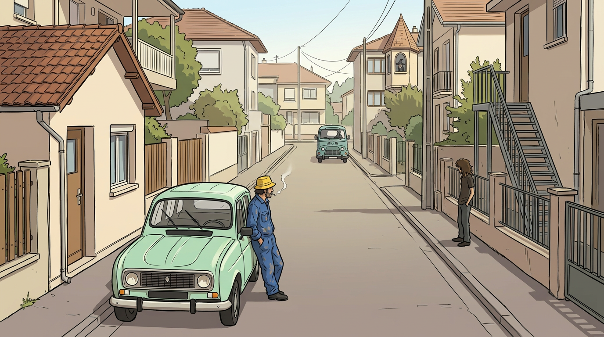
ancien fil, commit f1eccd4 (03h40)
Add complete clip storyboard and opening frame
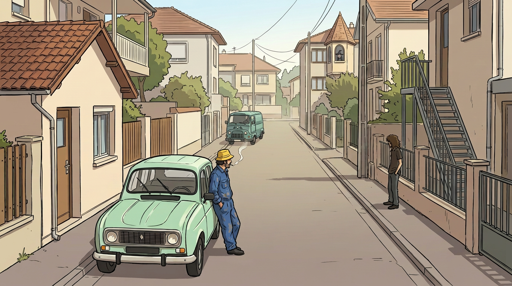
ancien fil, commit 068faf0 (03h48)
Correct Estafette position in opening storyboard
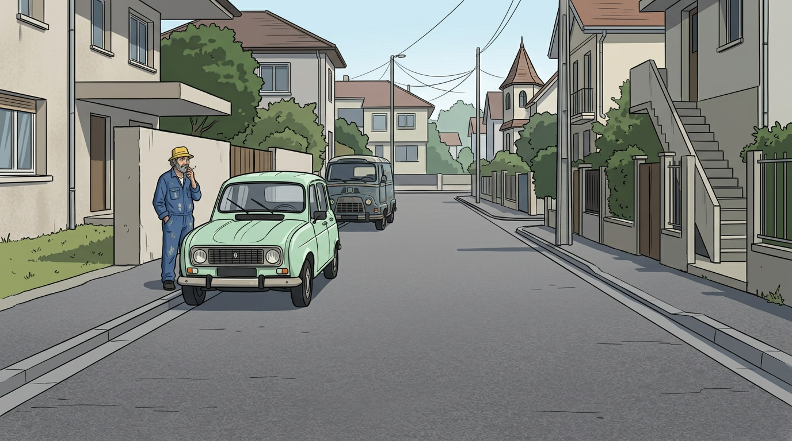
ancien fil, commit dda932f (06h01)
Reframe P01 master with fixed realistic 4L placement — version en place dans le storyboard
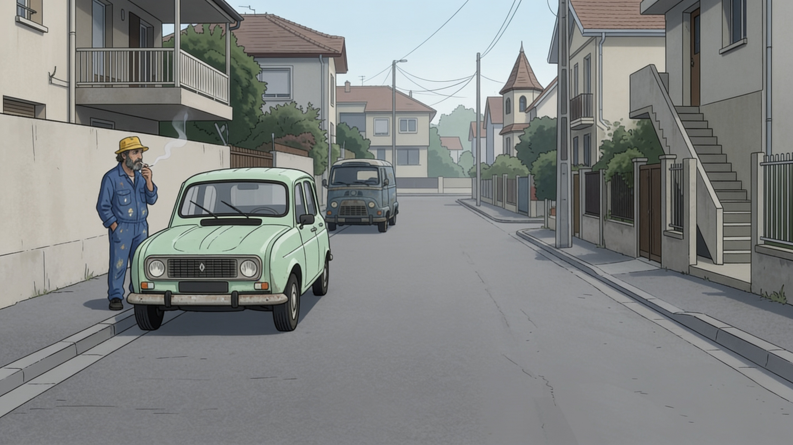
nouveau fil, généré le 11/10 à partir de v3 + photo de référence + style frame Jeannot
Même géographie que v3 (4L unique contre le trottoir gauche, Estafette plus loin même côté, escalier d'Henri à droite, tourelle au fond) ; Jeannot sur le trottoir à côté de la 4L, cigarette avec un seul filet de fumée.
P02 00:05–00:10 ⏳ À valider
Instrumental
Glissement vers la maison de Jeannot et sa 4L vert menthe, rouillée mais intacte. Jeannot respire, décale son poids et tient sa cigarette ; Enji traverse le cadre pour son gag.
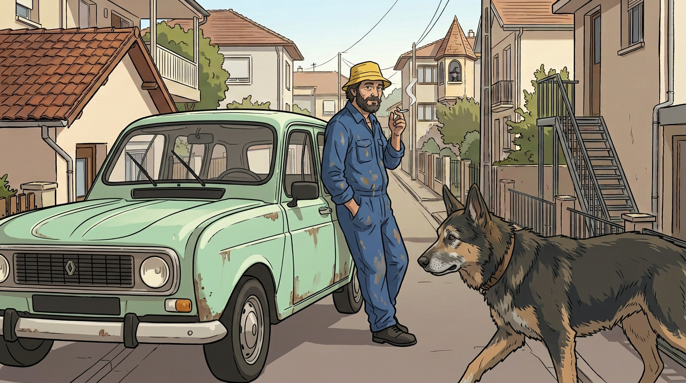
ancien fil, commit 2db27a6 (03h55)
Add P02 storyboard keyframe and progress tracker
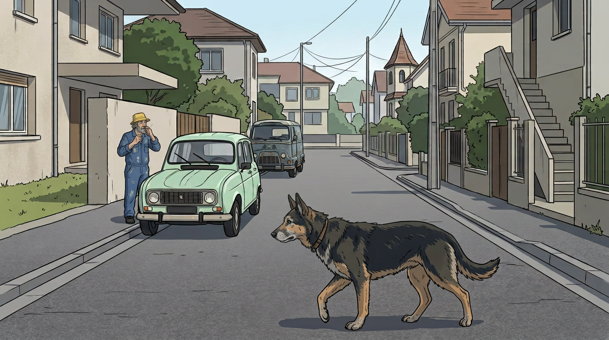
ancien fil, commit e2a3352 (06h33)
Reframe P02 with fixed 4L continuity — version en place dans le storyboard
P03 00:10–00:16,35 ⏳ À valider
Instrumental
Pan vers la maison voisine et l'escalier d'Henri, puis vers la tourelle de la sorcière et l'autre bout de la rue où se trouve Diego. Finir le mouvement sur Jeannot, prêt pour la première entrée vocale.
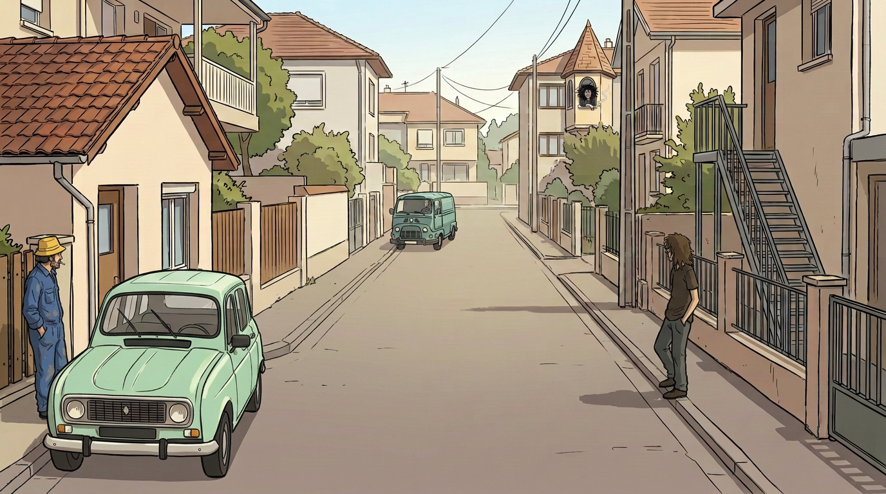
ancien fil, commit 7bda9a7 (03h56)
Add P03 street geography storyboard frame
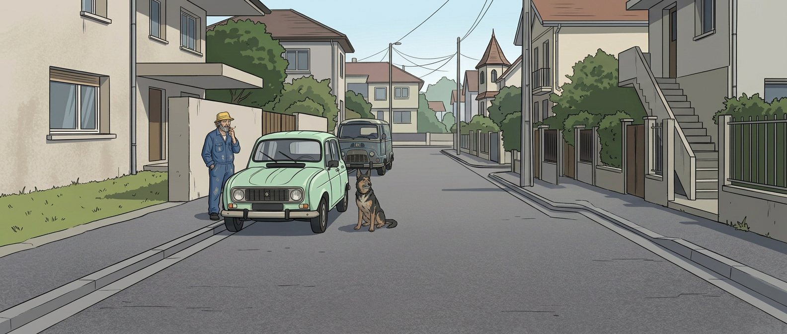
ancien fil, commit ea24889 (06h34)
Reframe P03 with master street layout — version en place dans le storyboard
P04 00:16,35–00:18,88 ⏳ À valider
« Jeannot est là, et toujours là ! »
Plan moyen 3/4 de Jeannot près de la 4L. Il lève la cigarette vers la bouche, inspire ; épaules et torse bougent, puis il relâche son souffle. Une seule fumée évolue avec le geste. Léger push-in ; la 4L reste visible.
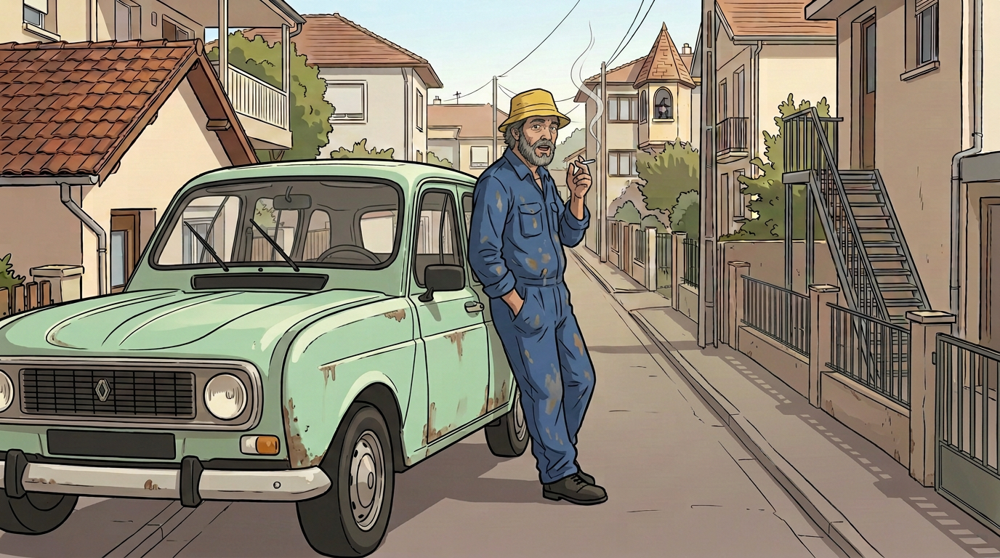
ancien fil, commit 36af4fe (03h57)
Add P04 Jeannot performance storyboard frame — version en place dans le storyboard
P05 00:18,88–00:21,42 ⏳ À valider
« La sorcière est partie, Jeannot est encore là »
La sœur descend de la tourelle et s'éloigne sur le trottoir droit, cigarette à la main, en tenant Enji en laisse. Jeannot reste près de son unique 4L, à l'emplacement fixe devant chez lui.
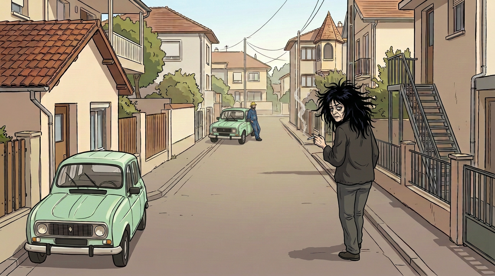
ancien fil, commit 1798b2b (03h57)
Add P05 witch departure storyboard frame
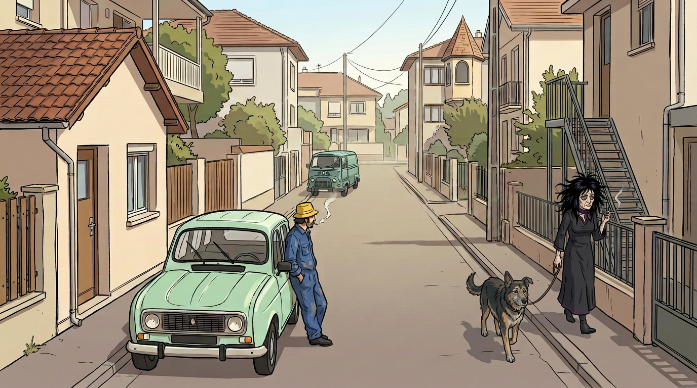
ancien fil, commit be42921 (05h28)
Correct P05 car continuity and leash Enji
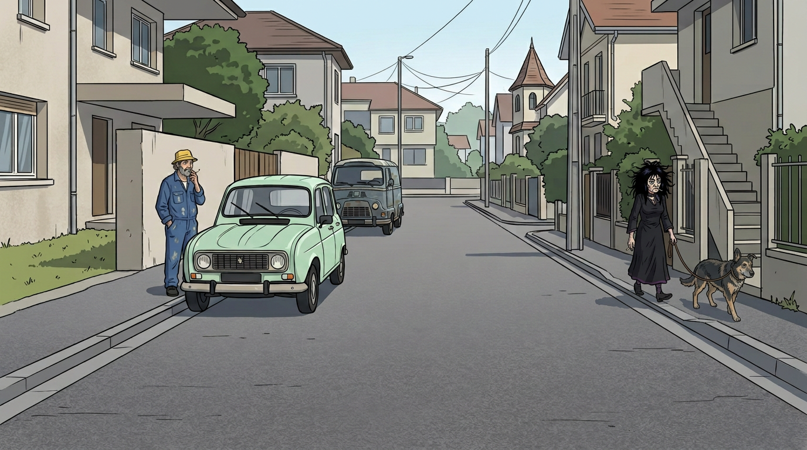
ancien fil, commit f1d2b39 (06h24)
Reframe P05 around fixed 4L and leashed Enji — version en place dans le storyboard
P06 00:21,42–00:23,95 ⏳ À valider
« Alors Henri s'enfuit, Jeannot est toujours là »
Plan latéral de course. Henri part de la maison voisine et traverse le haut des marches ; bras, épaules, tête et jambes ont des poses distinctes. Garder lunettes, cigarette et sourire lisibles.
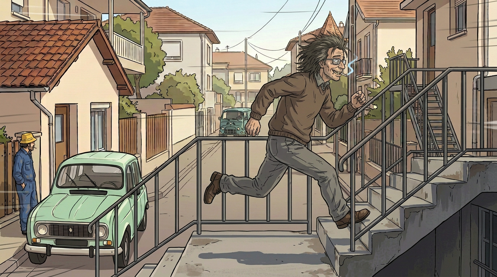
ancien fil, commit 1529fa5 (03h58)
Add P06 Henri running storyboard frame — version en place dans le storyboard
P07 00:23,95–00:26,48 ⏳ À valider
« La sorcière est revenue, c'est la merde dans la rue »
Whip-pan vers la tourelle ; la sorcière réapparaît, puis petit push-in sur son air fatigué. Réaction comique dans la rue, sans dialogue ni nouveau texte.
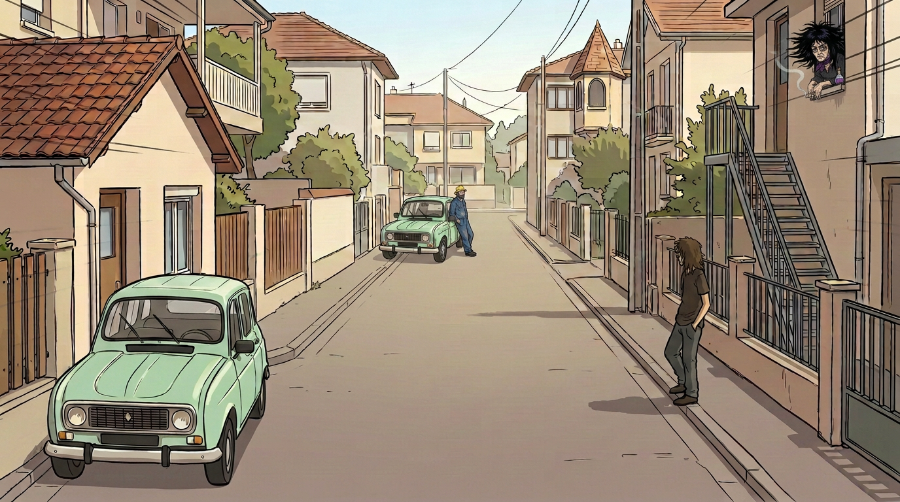
ancien fil, commit 45092df (03h59)
Add P07 witch return storyboard frame — version en place dans le storyboard
P08 00:26,48–00:29,02 ⏳ À valider
« Henri tombe des escaliers, toutes ses dents sont esquintées »
Tilt vers l'escalier et suivi continu : Henri perd pied, tente de se rattraper, pose main et genou sur une marche, glisse et finit assis en bas. Pas de salto ni rotation complète. Petit flash/poussière sur « dents », puis tenir son sourire aux dents ébréchées, sans gore ; Enji accourt sur le dernier temps.
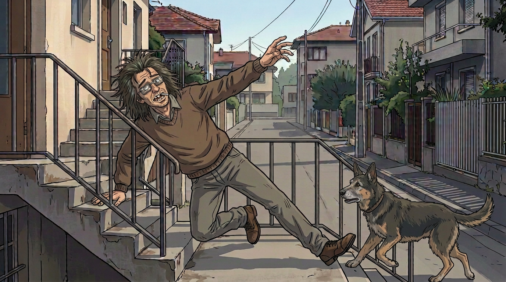
ancien fil, commit 862007f (04h02)
Add P08 Henri fall storyboard frame — version en place dans le storyboard
P09 00:29,02–00:31,47 ⏳ À valider
« Jeannot a gagné, Jeannot est toujours là »
Jeannot se redresse devant sa 4L et prend une pose héroïque ; flash bref et motif graphique récurrent. Aucun dommage à la voiture.
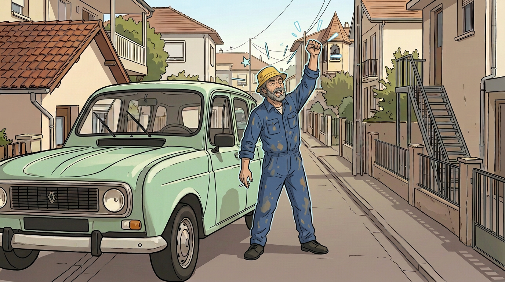
ancien fil, commit c00899b (04h03)
Add P09 Jeannot victory storyboard frame — version en place dans le storyboard
P10 00:31,47–00:33,91 ⏳ À valider
« Il ne partira pas, il restera là »
Gros plan de Jeannot, puis recul vers la maison entière. Il reste solidement ancré dans la rue ; aura encore discrète.
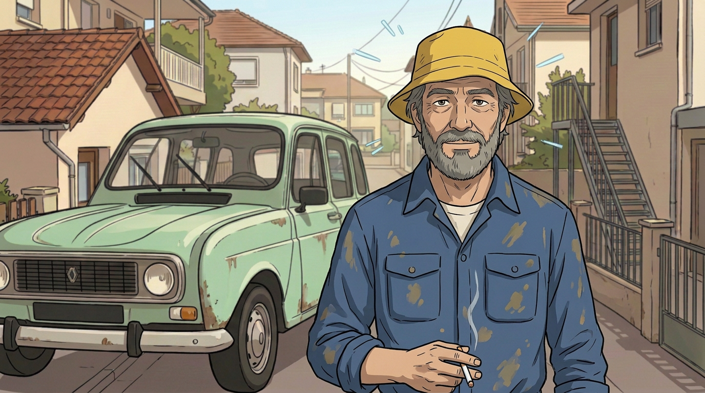
ancien fil, commit da041ab (04h11)
Add P10 Jeannot stays storyboard frame — version en place dans le storyboard
P11 00:33,91–00:36,36 ⏳ À valider
« La 4 ailes dans la rue, le bordel est revenu »
Plan sur la 4L depuis le même côté ; révéler sa forme carrée et sa rouille sans changer son emplacement ni son orientation. Léger frémissement comique possible, mais elle demeure intacte.
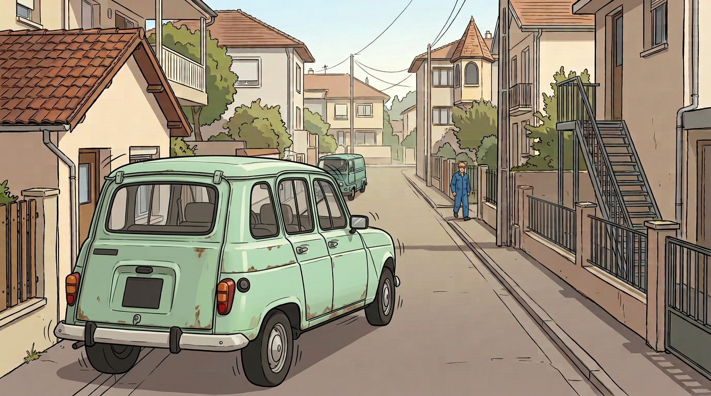
ancien fil, commit d87986c (04h12)
Add P11 Renault 4L storyboard frame
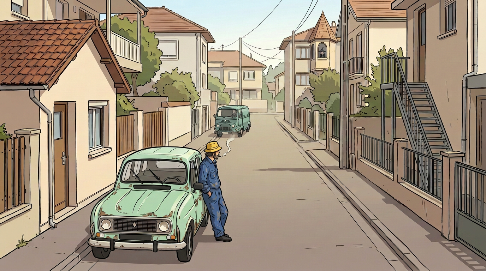
ancien fil, commit 676c4e3 (04h22)
Lock Renault 4L position and correct P11 frame — version en place dans le storyboard
P12 00:36,36–00:38,80 ⏳ À valider
« Le rat guette, dans son estafette »
Plan large depuis l'extrémité de Jeannot : la 4L reste au premier plan à son emplacement fixe ; l'Estafette bleu-gris est plus loin sur le même trottoir gauche. « Le rat », c'est Diego : seule sa tête et un peu d'épaule dépassent de la fenêtre conducteur ; visage conforme au concept approuvé. Aucun doublon de voiture ni personnage supplémentaire.
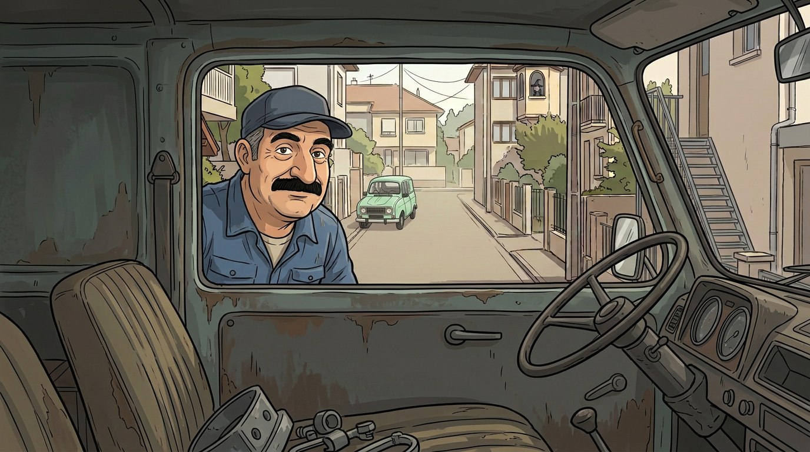
ancien fil, commit 235f743 (04h13)
Add P12 Diego in Estafette storyboard frame
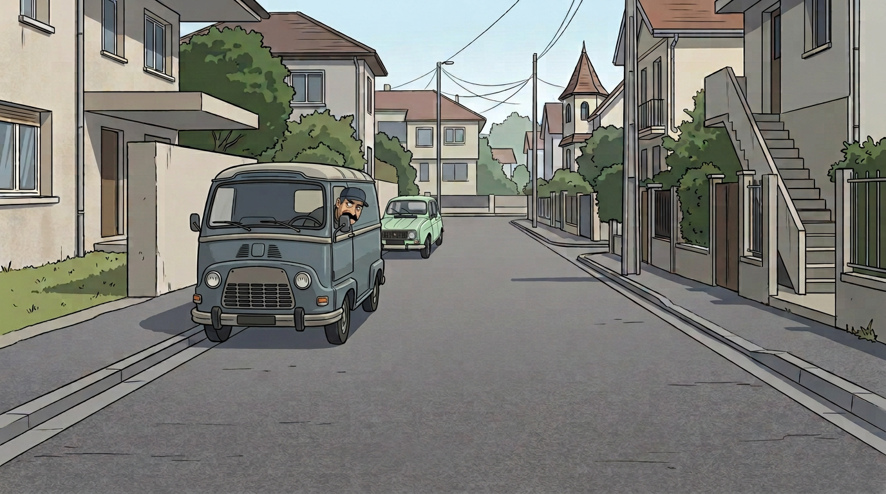
ancien fil, commit 486eb5b (06h22)
Correct P12 Diego's peeking Estafette shot
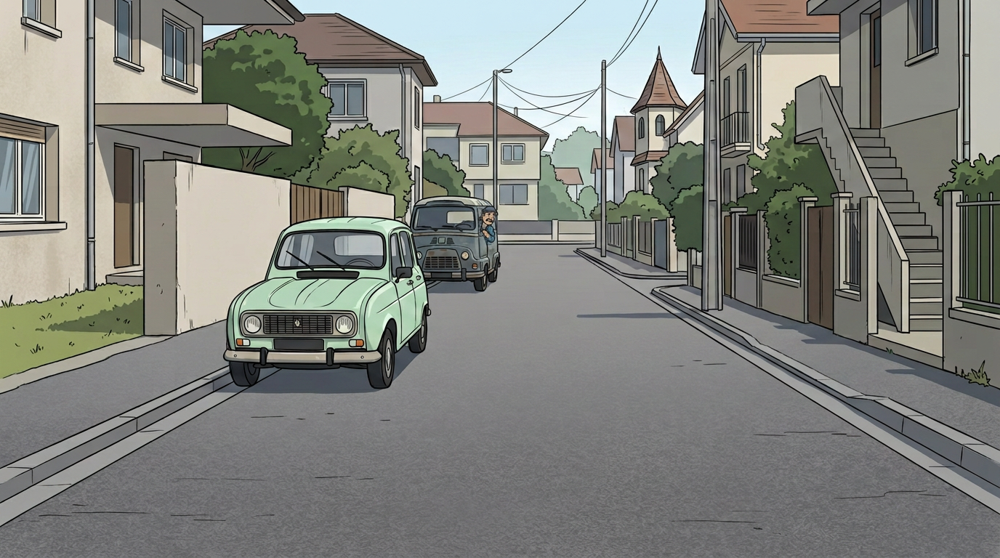
ancien fil, commit a43d5e7 (06h55)
Correct P12 van and 4L depth order — version en place dans le storyboard
P13 00:38,80–00:41,25 ⏳ À valider
« La sorcière d'sa tourelle, attend son Roméo »
Contre-plongée sur la sorcière à sa fenêtre ; son regard suit Diego dans l'Estafette. Cigarette, mascara et fatigue restent lisibles.
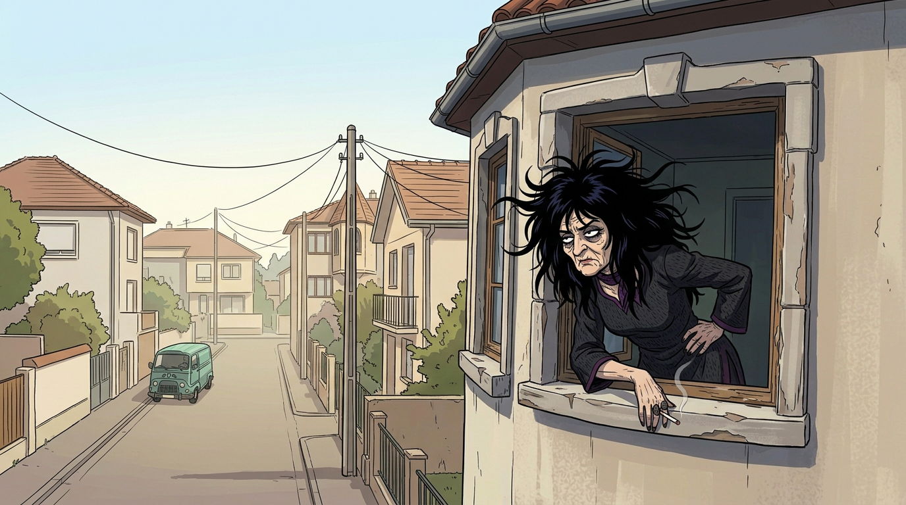
ancien fil, commit 9599dff (04h14)
Add P13 witch watching Diego storyboard frame — version en place dans le storyboard
P14 00:41,25–00:43,69 ⏳ À valider
« Et le rat Diégo, casse la 4 ailes de Jeannot »
Diego provoque une secousse comique de la 4L : mouvement caméra et éclat « BAM » visuel. La tôle vibre, mais rien ne casse et la voiture ne se déforme pas.
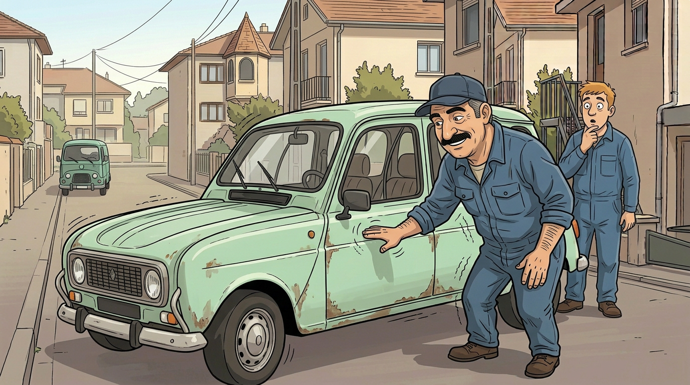
ancien fil, commit 54c00b4 (04h14)
Add P14 intact 4L comic shake storyboard frame — version en place dans le storyboard
P15 00:43,69–00:50,35 ⏳ À valider
Instrumental / montée musicale
Travelling le long de la rue, de la 4L jusqu'à Diego. Les deux rivaux se font face de part et d'autre de la chaussée. La caméra se rapproche ; lignes d'énergie et aura montent au rythme, sans changer de lieu.
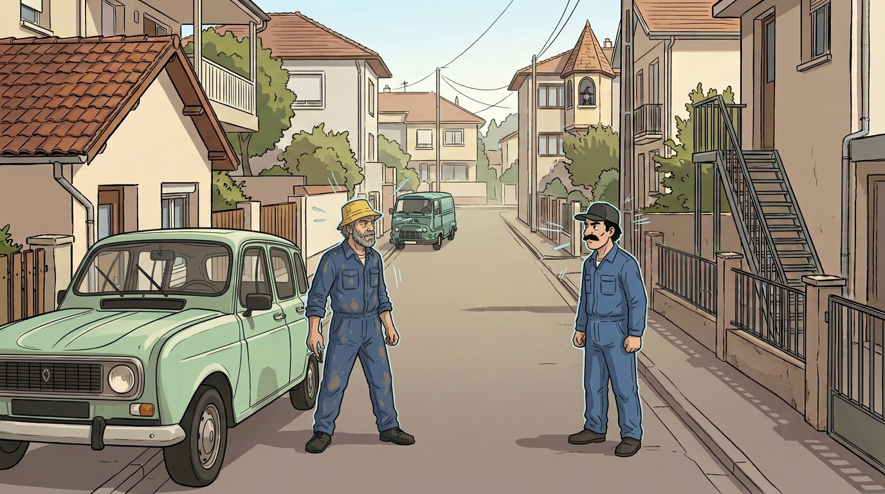
ancien fil, commit 6dc895b (04h15)
Add P15 Diego and Jeannot fight standoff frame — version en place dans le storyboard
P16 00:50,35–00:53,70 ⏳ À valider
« C'est le combat final, entre Diego et Jeannot »
Cadrage frontal alterné sur Diego puis Jeannot ; terminer en plan large de l'axe de la rue. Fenêtre vocale à vérifier.
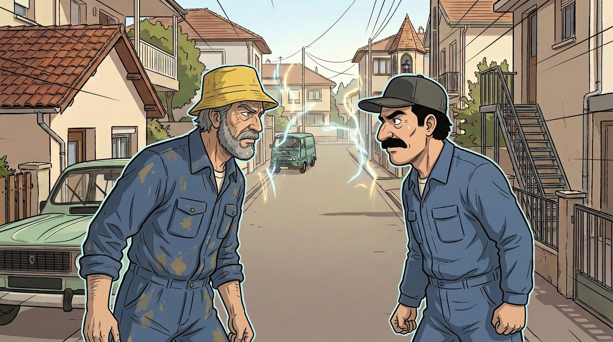
ancien fil, commit d281ff2 (04h16)
Add P16 final combat announcement frame — version en place dans le storyboard
P17 00:53,70–00:57,24 ⏳ À valider
« Jeannot a gagné, Jeannot est toujours là »
Diego et Jeannot tournent autour l'un de l'autre ; Jeannot reprend l'avantage. Flash/cartouche récurrent sur l'accent musical.
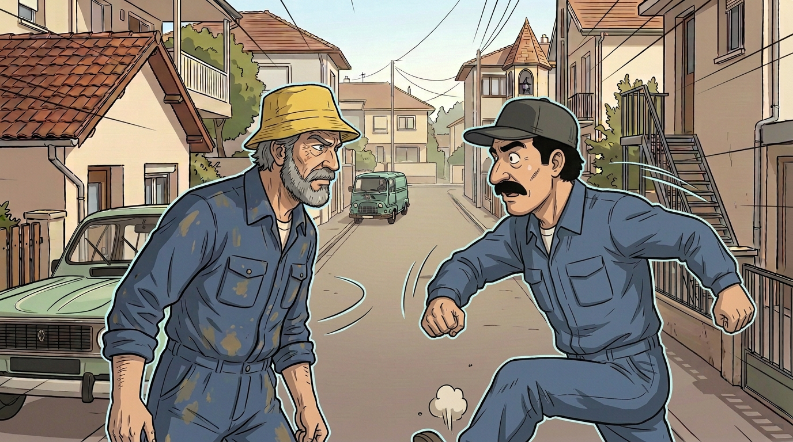
ancien fil, commit 1a0012f (04h17)
Add P17 Jeannot advantage storyboard frame — version en place dans le storyboard
P18 00:57,24–01:00,78 ⏳ À valider
« Il ne partira pas, il restera là »
Transformation shōnen de Jeannot : cheveux qui se dressent, aura et lignes de vitesse. Conserver chapeau, combinaison tachée et cigarette comme motifs ; rester dans la rue.
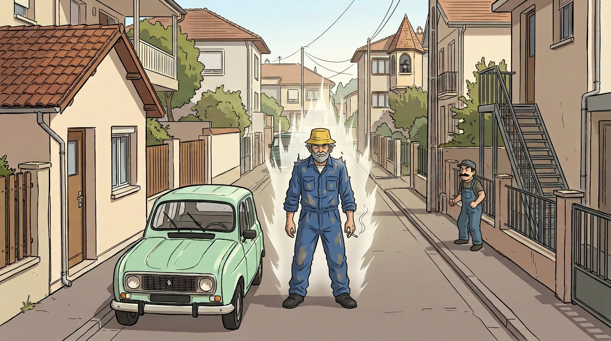
ancien fil, commit 96de1c3 (04h44)
Add P18 Jeannot power-up storyboard frame — version en place dans le storyboard
P19 01:00,78–01:03,99 ⏳ À valider
« Jeannot tape Diego, qui se casse le dos »
Gag d'action stylisé : bourrasque d'aura, Diego se déséquilibre comiquement, sans blessure réaliste ni gore.
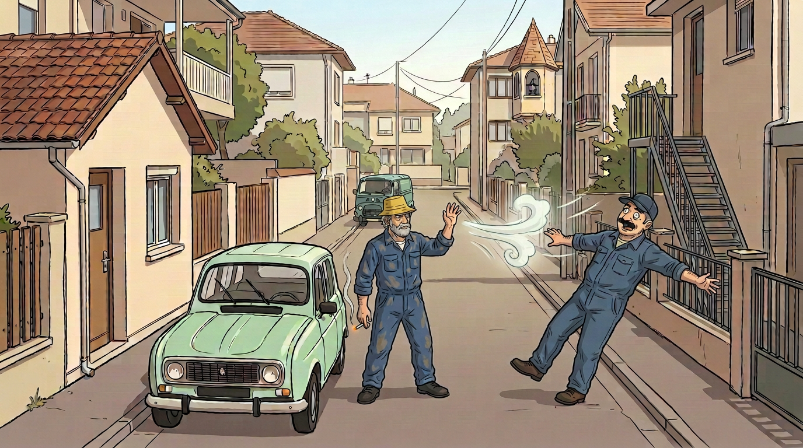
ancien fil, commit 7114680 (04h47)
Add P19 comic recoil storyboard frame — version en place dans le storyboard
P20 01:03,99–01:07,53 ⏳ À valider
« Diégo est à terre, c'est la fin de la guerre »
Diego se retrouve au sol, sonné mais indemne. Enji renifle sa casquette ou lui tourne autour ; gag muet, pas de dialogue.
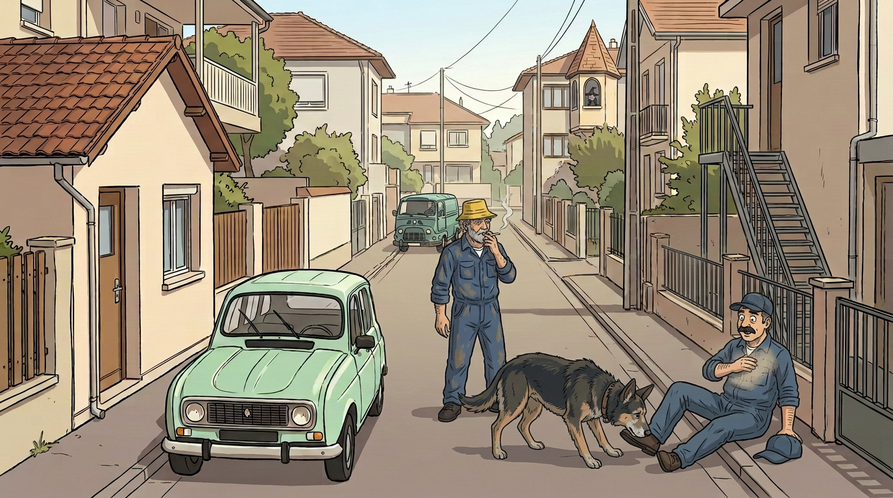
ancien fil, commit 8af880a (04h48)
Add P20 Diego and Enji storyboard frame — version en place dans le storyboard
P21 01:07,53–01:11,71 ⏳ À valider
« Jeannot prend sa peinture, et la verse sur la voiture »
Jeannot saisit son pot et le lève comme une boule d'énergie, puis amorce le geste de verser. Coupe dans le mouvement vers la Coccinelle orange de Marco ; ne pas viser la 4L.
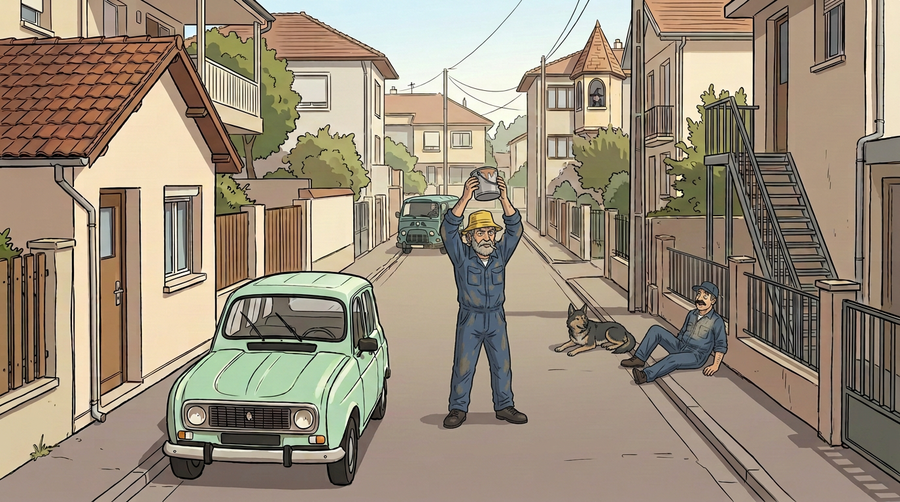
ancien fil, commit 7e5dc32 (04h50)
Add P21 Jeannot paint-can storyboard frame — version en place dans le storyboard
P22 01:11,71–01:14,92 ⏳ À valider
« du fils de Diégo, qui s'appelle Marco »
Révéler la Coccinelle orange sur parpaings, en restauration : capot ouvert, roue déposée, outils et pièces à proximité. La peinture touche la carrosserie comme gag visuel ; Diego et Marco sont clairement associés à cette voiture. Le design détaillé de Marco reste à définir.
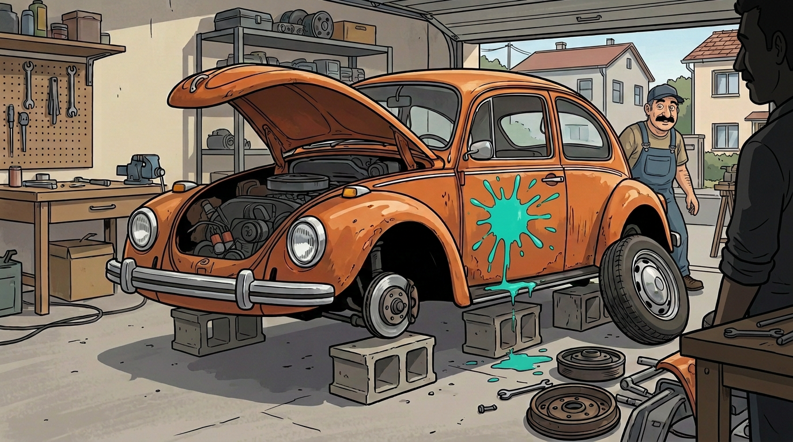
ancien fil, commit 449d450 (05h05)
Add P22 Marco Beetle paint storyboard frame — version en place dans le storyboard
P23 01:14,92–01:18,13 ⏳ À valider
« Diégo a perdu, Jeannot a gagné »
Retour à la rue. Diego reste au sol un instant, Jeannot se relève et reprend sa pose de héros ; Enji traverse le cadre. La 4L et l'Estafette restent à leur place fixe.
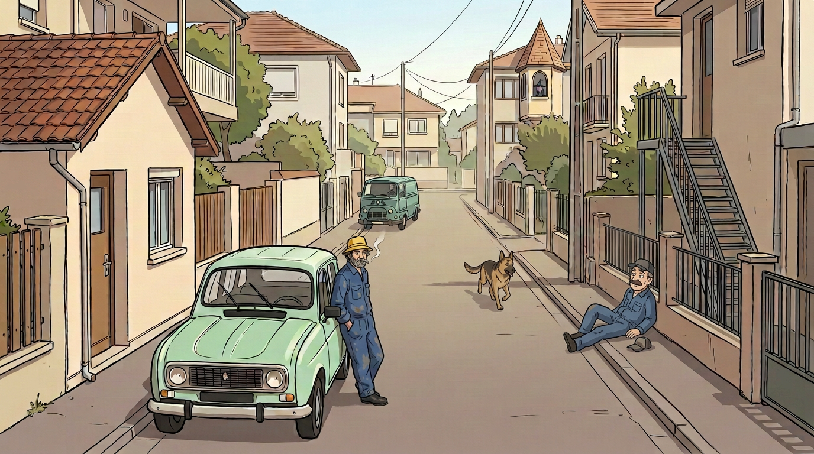
ancien fil, commit 1815a67 (05h07)
Add P23 victory return with fixed car continuity — version en place dans le storyboard
P24 01:18,13–01:22,00 ⏳ À valider
« C'est le roi de la rue, et il nous casse les pieds »
Pose de Jeannot au milieu de la rue. Réactions exaspérées aux fenêtres et gag d'Enji ; aucun dialogue ajouté. La 4L et l'Estafette restent à leur place.
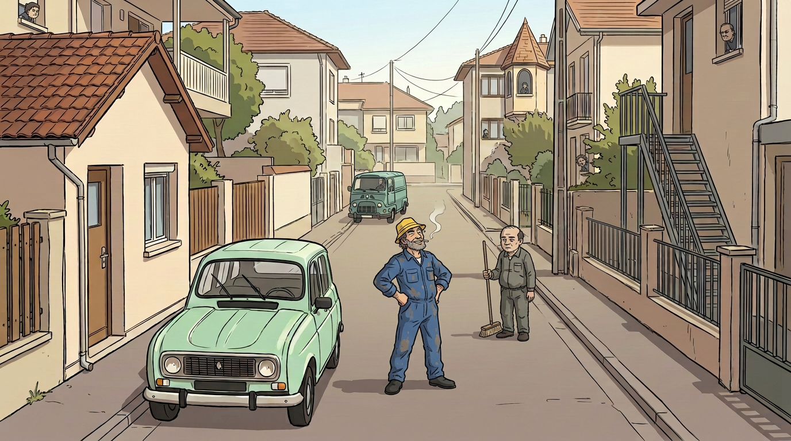
ancien fil, commit 673edd5 (05h09)
Add P24 king of the street storyboard frame — version en place dans le storyboard
P25 01:22,00–01:25,70 ⏳ À valider
Instrumental
Tenir la victoire, laisser retomber aura et poussière, puis recadrer Jeannot au premier accent du refrain final. La 4L et l'Estafette gardent leurs emplacements fixes.
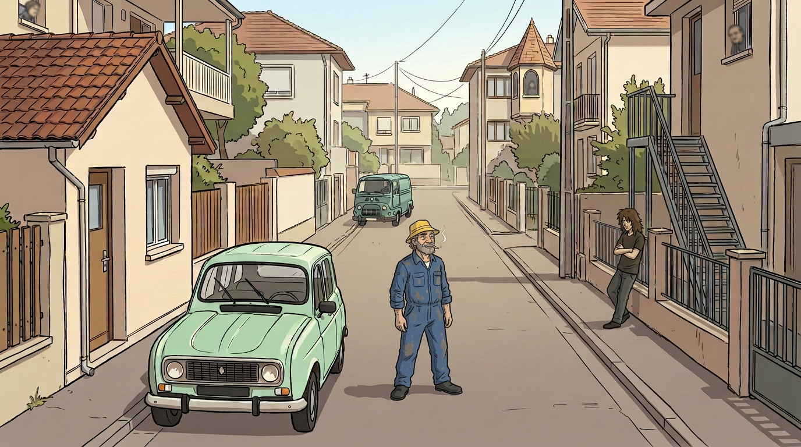
ancien fil, commit 0282de3 (05h10)
Add P25 victory breathing storyboard frame — version en place dans le storyboard
P26 01:25,70–01:29,45 ⏳ À valider
« Jeannot a gagné, Jeannot est toujours là »
Reprise du motif de victoire, en plan plus large qui inclut la 4L entière. Flash bref ; voitures à leurs emplacements fixes.
P27 01:29,45–01:33,20 ⏳ À valider
« Il ne partira pas, il restera là »
Jeannot reste devant sa maison ; respiration et posture se calment, l'aura s'éteint. La 4L et l'Estafette gardent exactement leurs emplacements fixes.
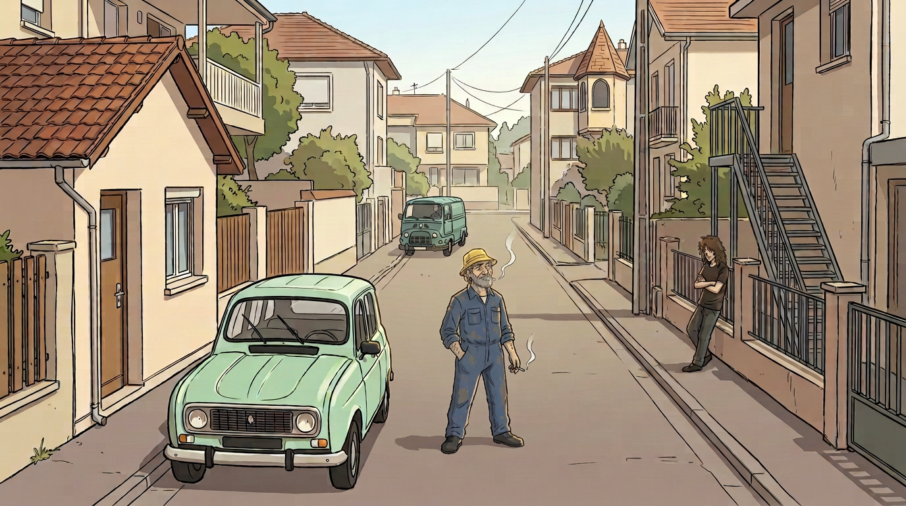
ancien fil, commit 8eb1389 (05h20)
Add P27 Jeannot remains storyboard frame — version en place dans le storyboard
P28 01:33,20–01:37,00 ⏳ À valider
« Fin »
Fond de carton sur le dernier accent vocal, avec espace réservé au titre exact « Fin » pour l'étape d'annotation ; maintien bref, à recaler sur la voix réelle. Les deux voitures gardent leurs emplacements fixes.
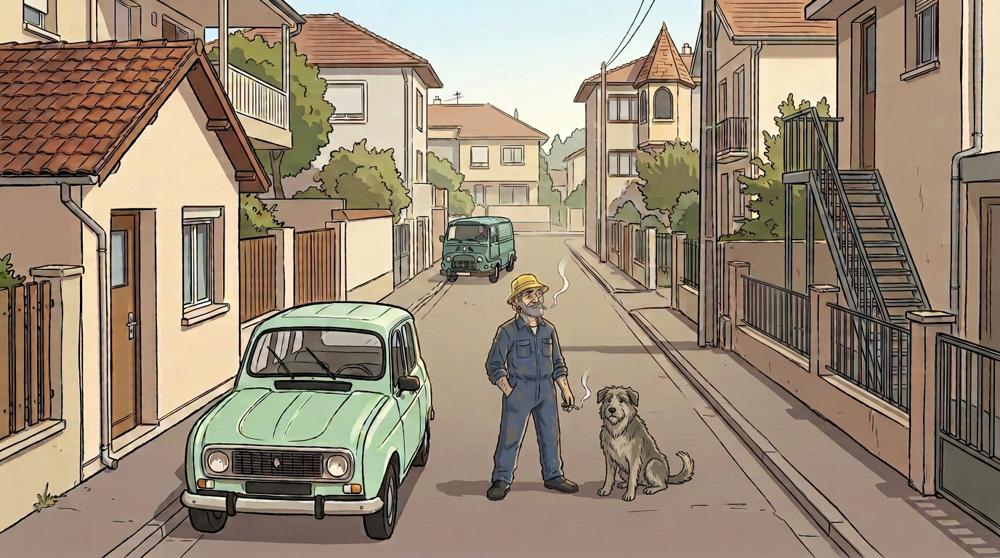
ancien fil, commit 129bef2 (05h22)
Add P28 closing title-card storyboard frame — version en place dans le storyboard
P29 01:37,00–01:44,36 ⏳ À valider
Instrumental / réverbération
Tenir la dernière pose et la rue, puis fondu au noir à la fin du MP3. Aucun texte supplémentaire ; la 4L et l'Estafette conservent leurs repères fixes.
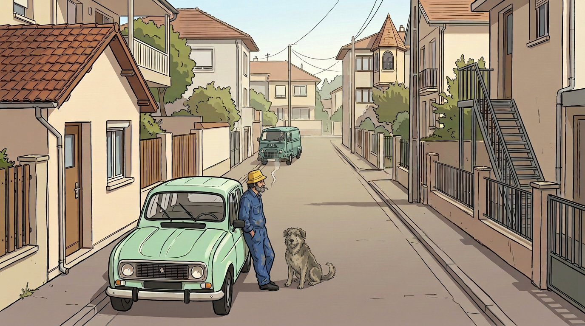
ancien fil, commit 4e4650b (05h23)
Add P29 final outro storyboard frame — version en place dans le storyboard